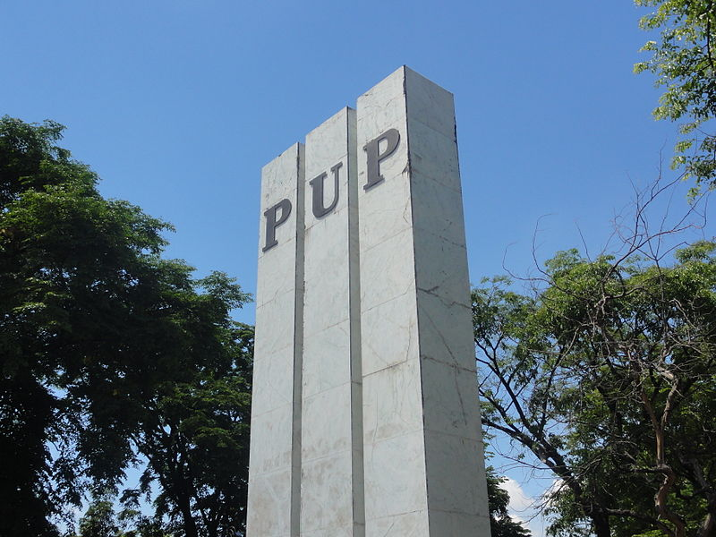
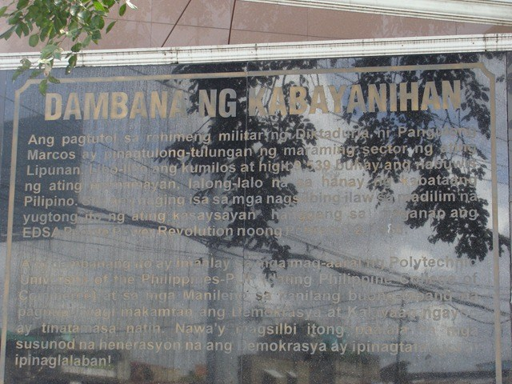

What to See
PYLON
The first thing and maybe also the most notable to see when going to the Main branch of the Polytechnical University of the Philippines is the Pylon which is the 3 Pillars situated side by side at the entrance.
The Pylon originally stood for the true, the good and the beautiful. The Triad of pillars may also stand for wisdom, strength and beauty because there should be wisdom to contrive, strength to support and beauty to adorn any great or important undertaking. Since 1987, however, the Pylon came to symbolized truth, excellence and wisdom.
MURAL
Aside from the Pylon in the entrance on the left side of the gates which is the exit a mural sculpture is positioned in the wall.
The sculpture at the gate is called “Consolidated Growth Through Education” done in 1974 by renowned sculptor Eduardo Castrillo.The mural is located at the main gate of the University Mabini Campus. The brass sculpture depicts the purposeful growth of the Filipino youth. It also signifies the role and responsibility of the youth in the progress and development of the nation, which the University recognizes.
Also at the gate is a memorial called “Dambana ng Kabayanihan” or the Shrine of Heroism, dedicated to the youth leaders who opposed the Marcos dictatorship, many of whom came from this university.
BAHAY NI MABINI
Officially, the Santa Mesa campus is called the Mabini campus, named after one of the leading intellectuals of the Philippine Revolution, Apolinario Mabini. Interestingly, Mabini used to live in a house in the Nagtahan area, around 1.5-2 kms. away from the campus, right near where Nagtahan Bridge now stands. What better place suited to move it to than to PUP’s campus that was named after him. Thus, the Mabini Shrine stands as a landmark in the campus since 2008.
OBELISK

One of the main architechtural feature of the campus other than the Pylon is the Obelisk which is directly seen when entering the campus due to its enormous height. The PUP Obelisk with the university’s logo at the helm: a golden star with 5 concentric circles. At the front is the bust of Apolinario Mabini.On top is the University Star Logo can also be seen from afar.The Obelisk, standing majestic on its base, depicts the strength of the Polytechnic University of the Philippines as an institution of higher learning, promoting educational and moral aims which are fortified by a determined leadership with a clear vision for the Filipino youth and an efficient support system inspired by the virtues of public service.
PUP LAGOON
The PUP Main Campus never runs out of beatiful spots to relax and chill and also eat, the place where most of Pupian buys food is inside the walls of the Intramuros which is commonly called the lagoon with many stall to choose from and variety of foods to pick you wouldnt want to leave the lagoon until you filled your craving. The walls of the lagoon is architechtured to look like the walls of the Intramuros in Manila, The walls are also referred as The Great Wall
LINEAR PARK
The PUP Main Campus is placed right beside the Pasig River thus seeing the river once in your college life not impossible even if you are studying within CEA or COC. Many students pass time just sitting in the linear park though the river reeks of old garbage. It once was a place to hangout and maybe it still is. Speaking of the Pasig River, the campus has made good use of its riverside location by getting its own river ferry station of Pasig River ferry service. This makes PUP’s Mabini Campus the only campus in Metro Manila at least that manages to have its ferry station.